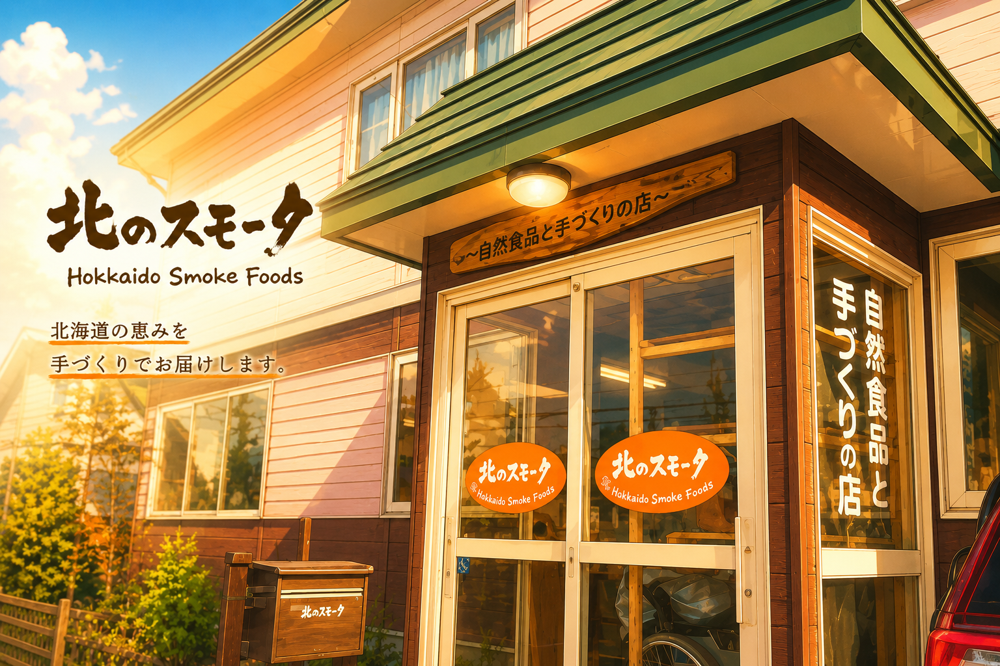
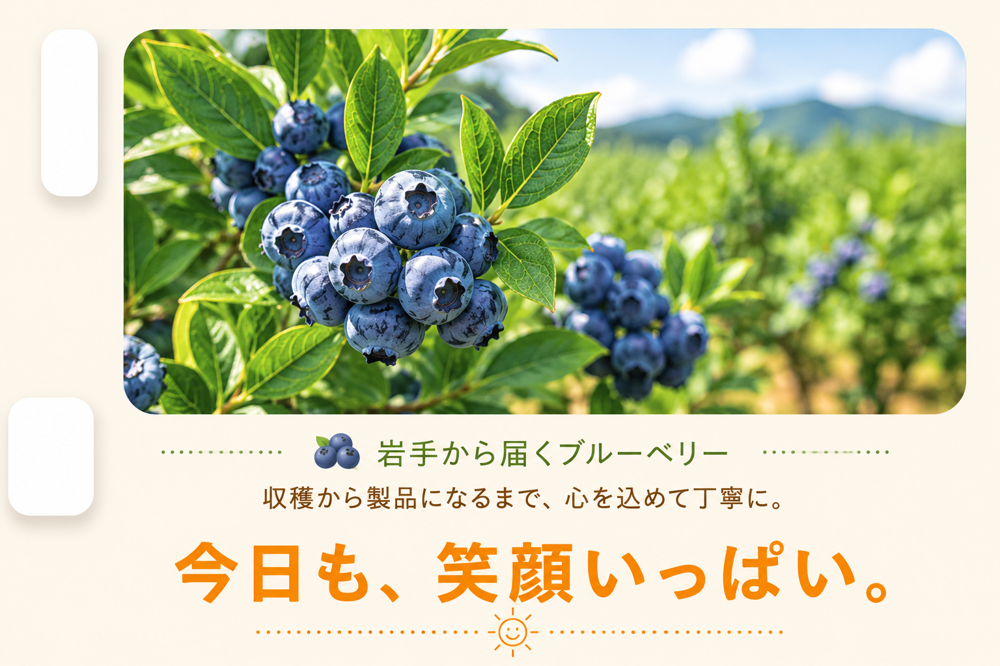

北海道から日々の活動をお届けします。
地域活動支援センター 北のスモーク（北スモ）は 小規模ながら様々な障害をお持ちの方が集まり 日々の活動や作業、情報交換、昼食、イベントなど、 施設での毎日の様子を発信しています。
日々の活動や楽しい出来事を Amebaブログで更新しています。
毎日の出来事や施設での活動、 みなさんの様子をご紹介します。
毎日の昼食や季節のメニューなど、 北スモのおいしい時間をご紹介します。
箱詰め作業や季節のイベントなど、 さまざまな取り組みを発信しています。